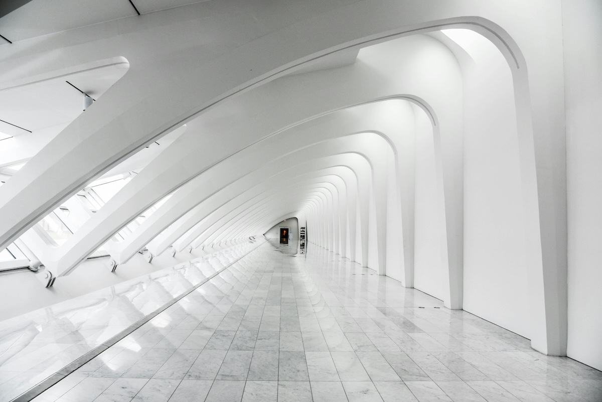

Fotoğrafta Perspektif: Görüntülere Derinlik Katın
Fotoğrafçılık, bir anı dondurmanın ve bir hikaye anlatmanın en etkili yollarından biridir. Ancak bir fotoğrafın gücünü artıran, ona derinlik ve anlam katan unsurların başında perspektif gelir. Perspektif, bir görüntüyü izleyicinin gözünde üç boyutlu hale getirir ve ona daha fazla gerçeklik kazandırır. Bu yazıda, fotoğrafta perspektifin nasıl kullanıldığını ve etkileyici görüntüler oluşturmak için hangi tekniklerin uygulanabileceğini inceleyeceğiz.
Perspektif Nedir?
Perspektif, bir sahnedeki nesnelerin, izleyiciye olan uzaklıklarına bağlı olarak nasıl göründüğünü tanımlar. Gerçek hayatta, daha yakın olan nesneler daha büyük görünürken, uzaktaki nesneler küçülür. Bu doğal algı, fotoğrafçılıkta da görsel derinlik yaratmak için kullanılır.
Farklı Perspektif Türleri
Doğrusal Perspektif
Doğrusal perspektif, paralel çizgilerin sonsuza kadar uzandıkça bir noktada birleşiyormuş gibi görünmesi ilkesine dayanır. Bu, özellikle uzun yollar, koridorlar ya da raylar gibi kompozisyonlarda belirgindir. Bu tür perspektif, izleyicinin dikkatini sahnenin derinliklerine çeker ve fotoğrafa bir yolculuk hissi kazandırır.

Örnek: Bir tren yolunun sonsuzluğa doğru uzandığı bir fotoğraf, doğrusal perspektife güçlü bir örnektir.
Atmosferik Perspektif
Atmosferik perspektifte, uzaktaki nesneler daha bulanık ve renkleri daha soluk görünür. Bu durum, havadaki toz parçacıkları ve atmosferik koşulların etkisiyle oluşur. Dağ manzaraları veya geniş doğal alanlar bu tür perspektifi ortaya koymak için ideal alanlardır.

Örnek: Uzakta kalan dağların daha puslu ve solgun göründüğü bir manzara fotoğrafı.
Farklı Bakış Açısı Perspektifi
Perspektifi değiştirmenin en kolay yollarından biri, fotoğraf çekme açısını değiştirmektir. Yüksekten ya da alçaktan çekilen bir fotoğraf, sıradan bir görüntüye sıra dışı bir hava katar. Kuştüyü bakış açısı, sahneyi yukarıdan gösterirken, solucan bakış açısı tam tersi şekilde aşağıdan yukarıya doğru bir bakış sunar. Bu bakış açıları, nesnelerin büyüklüğünü ya da mekandaki yerlerini abartarak farklı bir algı yaratır.

Örnek: Bir gökdelenin dibinden yukarıya bakılarak çekilen bir fotoğraf, binanın devasa boyutlarını vurgular.
Fotoğrafta Perspektifi Güçlendirmek İçin İpuçları
Ön, Orta ve Arka Planı Kullanın
Bir fotoğrafta derinlik hissi yaratmanın en etkili yollarından biri, ön, orta ve arka plan öğelerini kullanmaktır. Ön planda bir nesne bulundurarak, orta ve arka plandaki unsurlarla etkileşim halinde bir derinlik oluşturabilirsiniz. Bu, izleyicinin fotoğrafı katman katman keşfetmesini sağlar.
Tek Noktaya Dikkat Çekme
Doğrusal perspektifte, tüm çizgiler tek bir noktada birleşir. Fotoğraflarınızda bu birleşme noktasını stratejik olarak yerleştirerek, izleyicinin dikkatini fotoğrafın ana konusuna çekebilirsiniz.
Lens Seçimi
Geniş açılı lensler, perspektifi abartarak derinlik algısını artırır. Bu lensler, özellikle manzara fotoğraflarında uzaktaki nesnelerin daha küçük görünmesini sağlayarak fotoğrafa dramatik bir derinlik kazandırır. Telefoto lensler ise uzaktaki nesneleri sıkıştırarak birbirine daha yakın görünmelerini sağlar, bu da perspektif etkisini azaltır ancak odaklanmayı kolaylaştırır.
Perspektifin Yaratıcı Kullanımı
Perspektif yalnızca fotoğraflarda derinlik yaratmak için değil, aynı zamanda hikaye anlatımını güçlendirmek için de kullanılır. Perspektifi yaratıcı bir şekilde kullanarak, izleyiciye alışılmadık bakış açıları sunabilir ve fotoğraflarınıza benzersiz bir imza katabilirsiniz. Örneğin, küçük bir nesneyi ön plana yerleştirip, arka plandaki büyük bir nesneyi küçük göstererek yanıltıcı perspektiflerle oynayabilirsiniz. Bu tarz oyunlar, izleyicinin görsel algısıyla etkileşim kurmanıza olanak tanır.
Sonuç
Fotoğrafta perspektif, yalnızca teknik bir unsur değil, aynı zamanda duygusal bir etkileyicidir. Doğru kullanıldığında, izleyiciyi içine çeken, hikaye anlatan ve anı ölümsüzleştiren güçlü bir araçtır. İster doğrusal perspektifle derinlik yaratın, ister atmosferik perspektifle izleyiciyi uzaklara götürün; fotoğraflarınızda perspektifi etkin bir şekilde kullanarak, daha etkileyici ve unutulmaz kareler yakalayabilirsiniz.
Perspektifi nasıl kullandığınız, fotoğraflarınıza kişisel bir dokunuş katacaktır. Şimdi kameranızı alın ve dünyaya farklı açılardan bakmanın keyfini çıkarın!